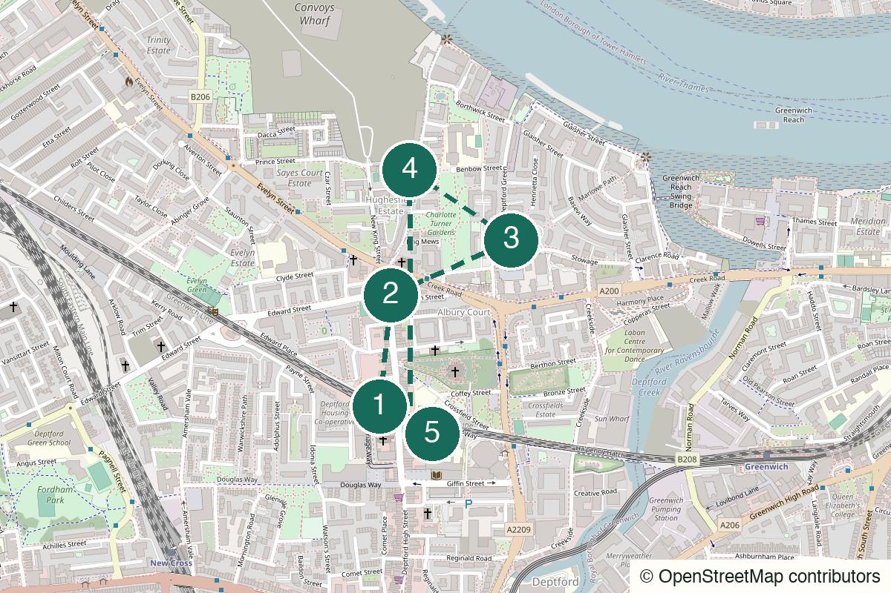

London Not yet field-walked
Crystal Palace
Views, eccentric park details and a pub finish that earns itself.
Start Crystal Palace
Not yet field-walked · verify live details
A market-day walk for street voltage, an old churchyard and a Caribbean finish under the arches.
No field notes from readers yet — share one if you walk it.
Deptford rail – Time the visit to a market day, then walk directly to the high street.
Deptford Market Yard
Open the whole walk (opens in a new tab)
Verify market days, pub amenities, Buster Mantis hours and music.
We never ask for your location.
Start with the market’s mess, take one quiet historical pause, then choose between a stubborn pub and a more lively Caribbean finish.
Not polished, not Instagram-first and not consistent on non-market days.
Better for someone who enjoys texture and surprise more than a polished itinerary.
Good for a small group on a confirmed market day; the high street gives everyone something to react to.
The market and churchyard work especially well alone; the arches finish is optional.

Deptford rail station, London SE8
From the start Arrive from London Bridge, then walk directly to the market and high street.
A short rail trip that makes the district feel more separate than it is. Check that it is a market day before setting off.
Walk here from the station to Deptford station (opens in a new tab)
Deptford High Street, London SE8
From the previous stop Walk the length of the market and high street; stalls, fabric, fish and Vietnamese cafés are the opening chapter.
No curation required. Buy something useless if it feels right; if the market is not operating, use a different route rather than a weakened imitation.
Walk from the previous stop to Deptford Market + high street (opens in a new tab)
St Nicholas Church, Deptford Green, London SE8
From the previous stop Move to the churchyard for the quiet pause; use the pin for the gate rather than approaching through private-looking service lanes.
Skull-and-bones gateposts and the Christopher Marlowe footnote: ten quiet minutes with a disproportionate amount of story.
Walk from the previous stop to St Nicholas churchyard (opens in a new tab)
116 Prince Street, London SE8 3JD
From the previous stop Walk to Prince Street and number 116. Verify current hours and bar-billiards availability before relying on either.
Backstreet, stubborn and trend-resistant: a complete ending if a quieter pub is the right answer.
Walk from the previous stop to The Dog & Bell (opens in a new tab)
3–4 Resolution Way, London SE8 4NT
From the previous stop Return through the high street to Resolution Way. If the later bar-kitchen branch is closed, stay at The Dog & Bell instead.
A Caribbean bar-kitchen under the railway arches for rum, curry goat and later music. Check current hours and programme first.
Walk from the previous stop to Buster Mantis (opens in a new tab)
Nearest practical station: Deptford rail or Deptford Bridge DLR
Deptford rail and the DLR are both close. Greenwich is one stop further if the evening still has room.
Open Deptford rail (opens in a new tab)Open Deptford Bridge DLR (opens in a new tab)
Market day, daytime into evening
Treat food as flexible until Buster Mantis is confirmed open; the Dog & Bell is a complete ending.
The quieter daylight version.
The fuller version when Buster Mantis is confirmed open.
Skip the long market browse, use one café or pub, and leave after the churchyard if weather makes the street feel punishing.
Continue one stop to Greenwich rather than forcing another venue in Deptford.
Leave from Deptford after the market, churchyard or Dog & Bell.
The least Instagram high street in inner London, by design.
Help keep it useful
Closed gates, changed hours and the point where you bailed are more useful than polite applause.